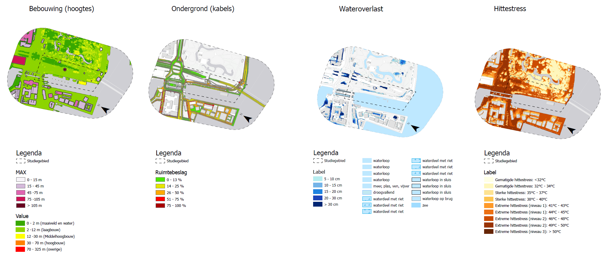
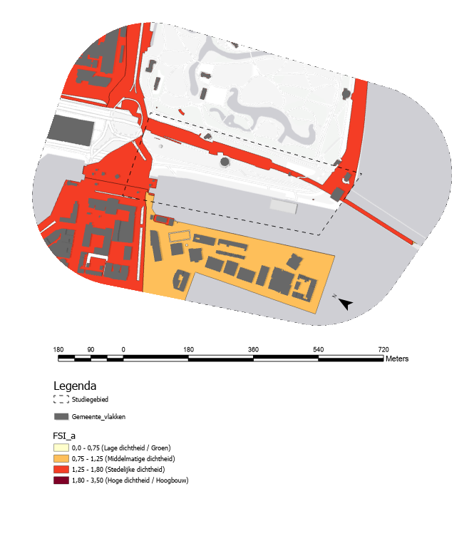
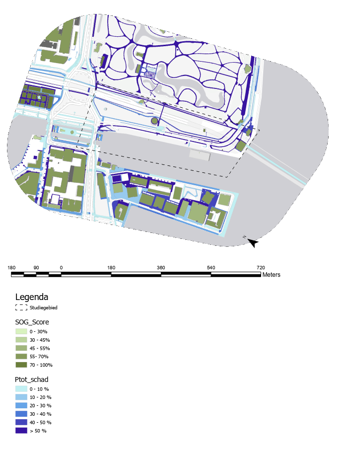
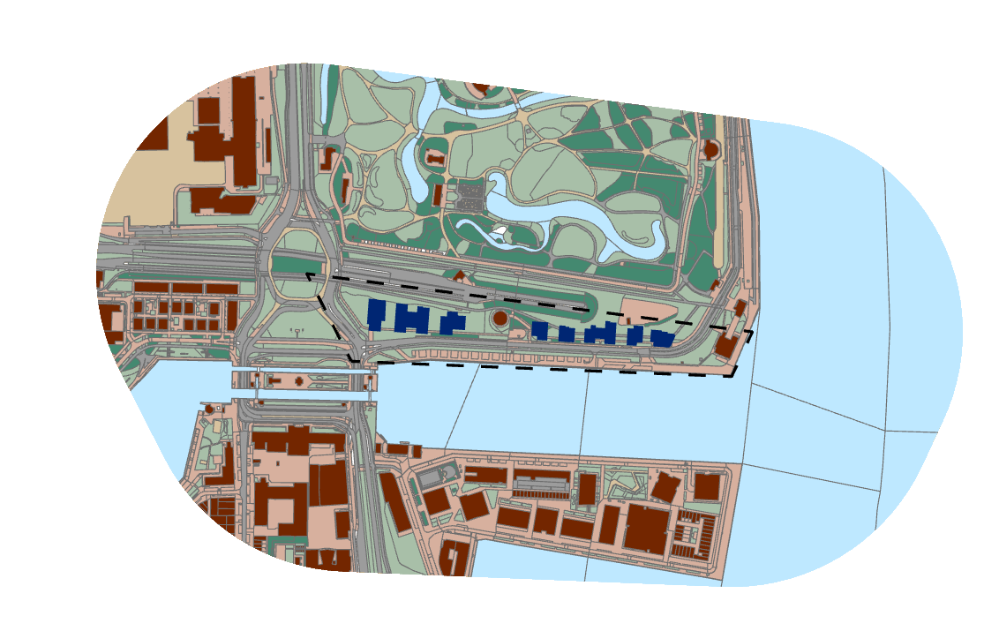
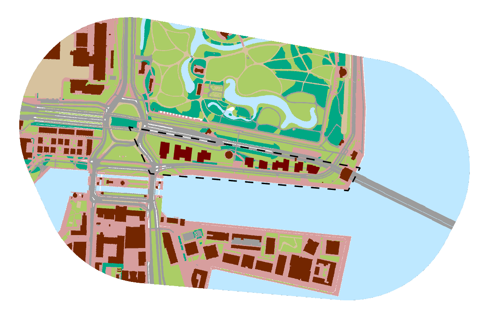
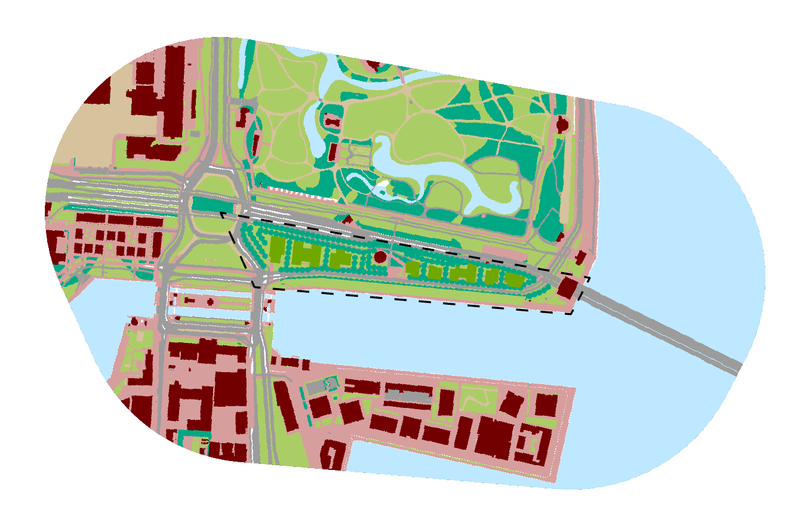
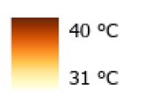

Project
Hittestress-analyse Parkhaven
Kaarten en een hittestressanalyse in ArcGIS Pro voor het masterplan Parkhaven, waarin ik het effect van bomen, groene daken en een groene kade op de gevoelstemperatuur vergelijk.

De opgave
Voor het project Parkhaven moesten we als groep in fase 1 de omgeving onderzoeken en ontwerpkansen vinden. In fase 2 maakten we een simulatie voor klimaatadaptatie.
Mijn deel was onder andere de vraag hoeveel koeler het gebied wordt met meer groen. ArcGIS Pro was nieuw voor mij.
Het proces
In fase 1 voegde ik bestaande kaarten samen in ArcGIS Pro en haalde ik daar data uit. In fase 2 bracht ik het landgebruik in kaart, tekende ik zelf de maatregelen in en berekende ik met de analysetools de heat index per maatregel. Hieronder staat elke stap, met de kaarten en video's.
- Bestaande kaarten samenvoegen in ArcGIS Pro (fase 1, september 2026)
- Landgebruik in kaart brengen en maatregelen tekenen (fase 2, oktober 2026)
- Heat index berekenen voor bomen, groene daken, een groene kade en alle maatregelen samen
- Resultaten presenteren aan de bedrijven achter het masterplan
Werk in detail
Taakverdeling
Onze belangrijkste taken per fase, en wat ik zelf deed.
- Fase 1, mijn bijdragen
- Welstandsnota, bestemmingsplan en regelgeving gezocht; kaarten gemaakt met ArcGIS Pro (bebouwing en klimaatadaptatie); ontwerpkansen bedacht met behulp van de kaarten en regelgeving.
- Fase 1, groepsleden
- AI-visualisatie.
- Fase 2, mijn bijdragen
- Gebouwen in Forma ontwerpen; Tygron proberen te gebruiken om te visualiseren (niet gelukt); hittestress analyseren.
- Fase 2, groepsleden
- Wateroverlast en groen analyseren of simuleren.
Fase 1: kaarten
17 september 2026
- Wat deed ik
- Bestaande kaarten samengevoegd in ArcGIS Pro en daar data uit gehaald. Ik heb vier kaarten gemaakt: hoogte, ondergrondse kabels, water/wateroverlast en hittestress.
- Uitdaging
- Ik werkte voor het eerst met ArcGIS Pro, dus ik moest alles nog ontdekken.
- Wat ging goed
- Ik had in korte tijd vier bruikbare kaarten.
- Geleerd
- Data inladen, samenvoegen en een kaart opmaken in ArcGIS.

Niet gebruikte kaarten
- Wat deed ik
- Twee extra kaarten gemaakt: een over dichtheid en de andere over schaduw.
- Wat ging minder
- Ze waren onduidelijk of voegden niets toe aan de opdracht, dus ze zijn niet in de eindpresentatie gekomen.
- Geleerd
- Dat je niet zomaar kaarten moet inladen, maar van tevoren goed moet weten wat voor data je eigenlijk nodig hebt.


Video fase 1
Deze video laat zien hoe ik in fase 1 te werk ging, van data inladen in ArcGIS Pro tot het zoeken van bestaande kaarten. Het is een nagemaakte versie, want het echte proces zat vol foutmeldingen en ik wist toen nog niet waar alles zat. Dat ik mijn stappen nu zonder hulp kan nadoen, laat zien hoeveel ik heb geleerd.
Fase 2: landgebruik
14 oktober 2026
- Wat deed ik
- Alle data in één kaart geladen (afbeelding 1), de kaarten overzichtelijk gemaakt (afbeelding 2) en de nieuwe maatregelen getekend: bomen, groene daken en een parkeerplaats vervangen door groen (afbeelding 3).
- Aanpak
- Dezelfde werkwijze als in fase 1, maar nu met meer data.
- Uitdaging
- Eerlijk gezegd liep dit proces soepel.
- Wat ging goed
- Ik kon sneller en zelfstandiger werken dan in fase 1.



Fase 2: heat index (gevoelstemperatuur)
15 oktober 2026
- Wat deed ik
- Met de analysetools in ArcGIS meerdere heat-indexkaarten gemaakt.
- Aanpak
- De kaarten van het landgebruik gepakt en daar met analysetools berekeningen op losgelaten voor de gevoelstemperatuur.
- Resultaat
- Duidelijk krijgen welke variant het meest koelt, en hoeveel graden dat scheelt.
- Geleerd
- Ik heb eindelijk leren werken met de analysetools in ArcGIS. In fase 1 lukte me dat totaal nog niet.

Video fase 2
Deze video laat zien hoe ik de heat index heb gemaakt met de analysetools in ArcGIS Pro. Je ziet vooral het einde van het proces, want de data had ik toen al ingeladen. Het was veel zoeken naar waar alles zit en dat is heel anders dan alleen kaarten inladen. Net als bij fase 1 is dit een nagemaakte versie.
Gebruikte tools en hulpmiddelen
Dit zijn alle tools die ik tijdens dit project heb gebruikt. De twee tools die ik vooraf al goed kende en gebruikte, waren Revit en Gemini. De andere vier waren een compleet nieuwe ervaring voor me, en ik heb er veel van geleerd.
- ArcGIS Pro
- Ik kan er inmiddels een stuk beter mee overweg, maar het is een enorm programma waar nog veel meer in te ontdekken valt.
- Claude
- Vind ik nu echt een fijne AI-tool vergeleken met andere opties.
- Forma
- Hiermee kan ik inmiddels zelfstandig een gebouw ontwerpen.
- Tygron
- Moet ik nog veel meer over leren.
Het resultaat
Met alle maatregelen samen wordt de omgeving ongeveer 2 graden koeler.
In dit project heb ik geleerd om zelfstandig met digitale tools te werken. Ik begon met weinig ervaring in ArcGIS Pro en kan nu zelf kaarten samenvoegen, data analyseren en een heat-indexanalyse maken.
Nieuwe software of tools kunnen veel tijd kosten en je weet vooraf niet of je ze echt nodig hebt. Een volgende keer controleer ik eerder of software en data kloppen voordat ik er veel tijd in stop.
Feedback
Feedback docenten (eindpresentatie)
Algemene feedback: Jullie hebben als groep vooral gefocust op het maken van analyses ==> er is veel informatie. Maar wat ga je er nu mee doen? Of wat hebben jullie hier precies mee gedaan? Dat ontbreekt nog in de presentatie. Mogelijk veel laten leiden door AI-ondersteuning, maar daardoor mogelijk cruciale vragen vergeten. Bijvoorbeeld: waarom een wadi in buitendijks gebied? Wat is het nut hier dan van als de rivier de grondwaterstand bepaalt.
Notitie: start 09:48. Eindtijd: 10:02. 40% overtijd.
Presentatiebeelden zijn soms klein, daardoor moeilijk te zien.
De presentatie heeft wel een eenduidig ontwerp.
Jullie zijn echt in GIS verdiept, dat is een nieuwe tool geweest en daar hebben jullie goede eerste analyses mee gemaakt. Dank daarvoor.
Gevoelstemperatuur neemt af door (schaduw van) gebouwen?
Presentatie werkt niet op de laptop, zorg dat je dit van tevoren test.
Matthijs begint om 09:55, 7 minuten in de presentatie.
Presentatie overtijd.
"het was heel kut", let graag op taalgebruik.
Neil geeft de vraag: hoe heeft deze analyse invloed gehad op de keuzes die jullie hebben gemaakt.
Hoe heeft de afweging van soorten bomen invloed gehad op de digitale tools die je hebt gebruikt.
Euromast is buitendijks gebied... dus gaat een wadi dan wel effect hebben als de rivier de grond aanvult. Let op dat er tijdens hittestress ook minder water is.. dus als daar je verkoelingsstrategie op is gebaseerd.... Oftewel, ondanks alle slimme digitale technieken is het nog belangrijker de systemen zelf ook goed te begrijpen.
5 losse analyses en daarmee wat minder 1 verhaal. Er lijken daardoor dubbelingen of overlappen te zijn tussen de 5 verhalen, maar het blijven losse stukjes.
Aangetoonde leerdoelen
-
1.1
Formuleert relevante digitale onderzoek- of ontwerpvragen binnen de gebouwde omgeving en kiest hiervoor passende methoden.
-
2.2
Communiceert bevindingen en ontwerpkeuzes helder, visueel en doelgroepgericht om besluitvorming en overdracht te ondersteunen.
-
3.3
Signaleert technologische innovaties en eigent zich zelfstandig nieuwe tools en werkwijzen toe om de professionele praktijk te versterken.